Visualización de Datos con PYTHON
Curso Programacion Analitica
Maestria TIC Linea Ciencia de Datos
Por Jose R. Zapata
Python cuenta con varias librerias para visualizacion las principale son:
-
matplotlib para graficas sencillas: bars, pies, lines, scatter plots, etc.
-
Seaborn para visualizacion estadistica: Para crear mapas de calor o de alguna manera resumiendo los datos y aún desea mostrar la distribución de los datos.
-
Plotly y Bokeh para visualizacion interactiva: Si los datos son tan complejos (o no puede ver la informacion de sus datos), utilice plotly y Bokeh para crear visualizaciones interactivas que permitan a los usuarios explorar los datos mismos.
Importancia de la visualizacion
El siguiente codigo demostrara El cuarteto de Anscombe demostracion realizada por el estadístico F. J. Anscombe.
Estos datos que estan conformados por 4 dataset demuestra la importancia de la visualizacion de los datos para su analisis.
import pandas as pd # libreria manipulacion de datos
import seaborn as sns # Libreria graficas
import numpy as np
%matplotlib inline
anscombe = pd.read_csv('https://github.com/mwaskom/seaborn-data/raw/master/anscombe.csv')
anscombe
| dataset | x | y | |
|---|---|---|---|
| 0 | I | 10.0 | 8.04 |
| 1 | I | 8.0 | 6.95 |
| 2 | I | 13.0 | 7.58 |
| 3 | I | 9.0 | 8.81 |
| 4 | I | 11.0 | 8.33 |
| 5 | I | 14.0 | 9.96 |
| 6 | I | 6.0 | 7.24 |
| 7 | I | 4.0 | 4.26 |
| 8 | I | 12.0 | 10.84 |
| 9 | I | 7.0 | 4.82 |
| 10 | I | 5.0 | 5.68 |
| 11 | II | 10.0 | 9.14 |
| 12 | II | 8.0 | 8.14 |
| 13 | II | 13.0 | 8.74 |
| 14 | II | 9.0 | 8.77 |
| 15 | II | 11.0 | 9.26 |
| 16 | II | 14.0 | 8.10 |
| 17 | II | 6.0 | 6.13 |
| 18 | II | 4.0 | 3.10 |
| 19 | II | 12.0 | 9.13 |
| 20 | II | 7.0 | 7.26 |
| 21 | II | 5.0 | 4.74 |
| 22 | III | 10.0 | 7.46 |
| 23 | III | 8.0 | 6.77 |
| 24 | III | 13.0 | 12.74 |
| 25 | III | 9.0 | 7.11 |
| 26 | III | 11.0 | 7.81 |
| 27 | III | 14.0 | 8.84 |
| 28 | III | 6.0 | 6.08 |
| 29 | III | 4.0 | 5.39 |
| 30 | III | 12.0 | 8.15 |
| 31 | III | 7.0 | 6.42 |
| 32 | III | 5.0 | 5.73 |
| 33 | IV | 8.0 | 6.58 |
| 34 | IV | 8.0 | 5.76 |
| 35 | IV | 8.0 | 7.71 |
| 36 | IV | 8.0 | 8.84 |
| 37 | IV | 8.0 | 8.47 |
| 38 | IV | 8.0 | 7.04 |
| 39 | IV | 8.0 | 5.25 |
| 40 | IV | 19.0 | 12.50 |
| 41 | IV | 8.0 | 5.56 |
| 42 | IV | 8.0 | 7.91 |
| 43 | IV | 8.0 | 6.89 |
Calcular los valores de la media y la varianza de cada dataset
agg = anscombe.groupby('dataset').agg([np.mean, np.var])
agg
| x | y | |||
|---|---|---|---|---|
| mean | var | mean | var | |
| dataset | ||||
| I | 9.0 | 11.0 | 7.500909 | 4.127269 |
| II | 9.0 | 11.0 | 7.500909 | 4.127629 |
| III | 9.0 | 11.0 | 7.500000 | 4.122620 |
| IV | 9.0 | 11.0 | 7.500909 | 4.123249 |
Calcular la correlacion
corr = [g.corr()['x'][1] for _, g in anscombe.groupby('dataset')]
corr
[0.81642051634484, 0.8162365060002428, 0.8162867394895981, 0.8165214368885028]
Graficar los datasets, haciendo un scatterplot y una regression lineal
# Grafica Usando seaborn
sns.set(style="ticks")
sns.lmplot(x="x", y="y", col="dataset", hue="dataset", data=anscombe,
col_wrap=2, ci=None, palette="muted", height=4,
scatter_kws={"s": 50, "alpha": 1});
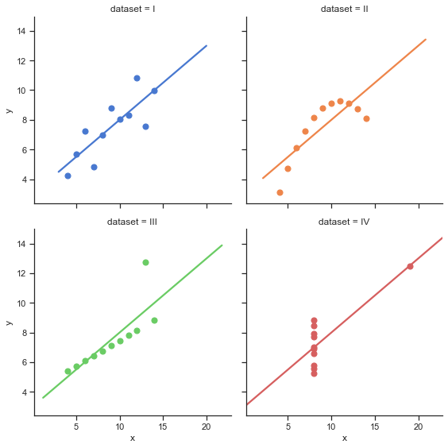
Calculo de los valores de la regresion lineal
fits = [np.polyfit(g['x'], g['y'], 1) for _, g in anscombe.groupby('dataset')]
# Almacenar los valores calculados de las regresiones lineales en un dataframe
val_reg = pd.DataFrame(fits,columns=['pendiente','intercepto'],index='I II II IV'.split())
val_reg.index.names = ['dataset']
val_reg
| pendiente | intercepto | |
|---|---|---|
| dataset | ||
| I | 0.500091 | 3.000091 |
| II | 0.500000 | 3.000909 |
| II | 0.499727 | 3.002455 |
| IV | 0.499909 | 3.001727 |
MATPLOTLIB
Matplotlib es el “abuelo” de las librerias de visualización de datos con Python. Fue creado por John Hunter. Lo creó para tratar de replicar las capacidades de graficar de MatLab en Python.
Es una excelente biblioteca de gráficos 2D y 3D para generar figuras científicas.
Algunos de los principales Pros de Matplotlib son:
- Generalmente es fácil comenzar por graficas simples
- Soporte para etiquetas personalizadas y textos
- Gran control de cada elemento en una figura
- Salida de alta calidad en muchos formatos
- Muy personalizable en general
Matplotlib le permite crear figuras reproducibles mediante programación. la página web oficial de Matplotlib: http://matplotlib.org/
Instalacion
Se debe instalar Matplotlib, pero si instalo Anaconda ya viene instalado, en caso de que no lo tenga se puede instalar asi:
pip install matplotlib o conda install matplotlib
en Jupyter notebook !pip install matplotlib
usar preferiblemente Conda.
Importar la libreria
Importar el modulo matplotlib.pyplot con el nombre de plt (esto es un estandar en la comunidad):
import matplotlib.pyplot as plt
Para ver las graficas directamente en este notebook se debe hacer con este comando:
%matplotlib inline
Esa línea es solo para Jupyter notebooks, si está usando otro editor, usará: plt.show() al final de todos sus comandos de graficos para que aparezca la figura en otra ventana.
# La mayoria de los datos son inventados para evitar los warnings por divisiones por cero
# o valores igual a infinito, entonces apagare los warnings
import warnings; warnings.simplefilter('ignore')
Comandos Basicos de Matplotlib
Veamos un ejemplo muy simple usando dos arreglos numpy. También se pueden usar listas, pero lo más probable es usar arreglos Numpy o columnas de pandas (que esencialmente también se comportan como arreglos). Los datos que queremos graficar:
import numpy as np
x = np.linspace(0,5, 11)
y = x ** 2
x
array([0. , 0.5, 1. , 1.5, 2. , 2.5, 3. , 3.5, 4. , 4.5, 5. ])
y
array([ 0. , 0.25, 1. , 2.25, 4. , 6.25, 9. , 12.25, 16. ,
20.25, 25. ])
Podemos crear un diagrama de líneas muy simple usando lo siguiente:
# Metodo basico para graficar X vs Y
plt.plot(x, y) # se grafica una linea de color azul
plt.show() # Mostrar la grafica luego de que ya se definio todos los elementos
# plt.show() no es necesario en jupyter notebook
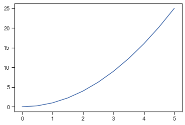
Titulo
plt.plot(x, y) # se grafica una linea de color azul
plt.title('Titulo de la grafica'); # definir el titulo de la grafica
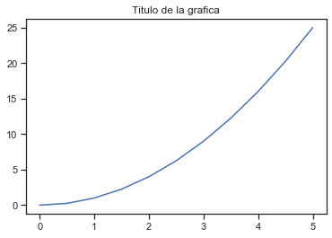
Nombres de los ejes
plt.plot(x, y) # se grafica una linea de color azul
plt.xlabel('Nombre del eje X') # definir el nombre del eje X
plt.ylabel('Nombre del eje Y') # definir el nombre del eje Y
plt.title('Titulo de la grafica'); # definir el titulo de la grafica
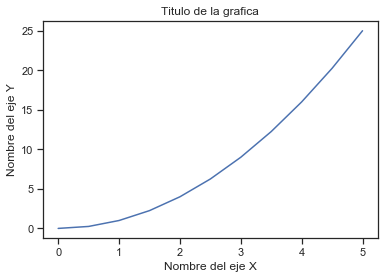
Legend
Puede usar el argumento de palabra clave label = “texto de etiqueta” cuando se agreguen gráficas u otros objetos a la figura, y luego usar el método legend sin argumentos para agregar la leyenda a la figura:
plt.plot(x, y, label="x vs y") # se grafica una linea de color azul
# se pone en el atributo 'label' el textto deseado
plt.xlabel('Nombre del eje X') # definir el nombre del eje X
plt.ylabel('Nombre del eje Y') # definir el nombre del eje Y
plt.title('Titulo de la grafica') # definir el titulo de la grafica
plt.legend(); # agregar el legend al plot
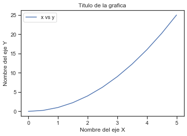
¡Observe cómo la leyenda se superpone con parte de la grafica!
EL Metodo legend toma un argumento opcional de palabra clave loc que puede usarse para especificar en qué parte de la figura debe dibujarse la leyenda. Los valores permitidos de loc son códigos numéricos para los diversos lugares donde se puede dibujar la leyenda. Consulte la página de documentación para obtener detalles.
Cuadricula (Grid )
plt.plot(x, y, label="x vs y") # se grafica una linea de color azul
# se pone en el atributo 'label' el textto deseado
plt.xlabel('Nombre del eje X') # definir el nombre del eje X
plt.ylabel('Nombre del eje Y') # definir el nombre del eje Y
plt.title('Titulo de la grafica') # definir el titulo de la grafica
plt.legend() # agregar el legend al plot
plt.grid(True) # poner grid en la grafica
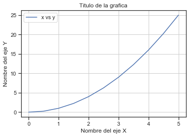
Tamaño de la Figura y DPI
Matplotlib permite especificar la relación de aspecto, el DPI y el tamaño de la figura cuando se crea el objeto Figure. Puede usar los argumentos de las palabras clave figsize y dpi. No es necesario poner las dos.
figsizees una tupla del ancho y alto de la figura en pulgadasdpies el punto por pulgada (pixel por pulgada).
# se cambia el tamaño de la figura y el numero de puntos por pulgada
plt.figure(figsize=(8,4), dpi=100)
plt.plot(x, y) # se grafica una linea de color azul
plt.xlabel('Nombre del eje X') # definir el nombre del eje X
plt.ylabel('Nombre del eje Y') # definir el nombre del eje Y
plt.title('Titulo de la grafica'); # definir el titulo de la grafica
# agrego ; al final del ultimo comando para solo mostrar la grafica
# plt.show() no es necesario en jupyter notebook
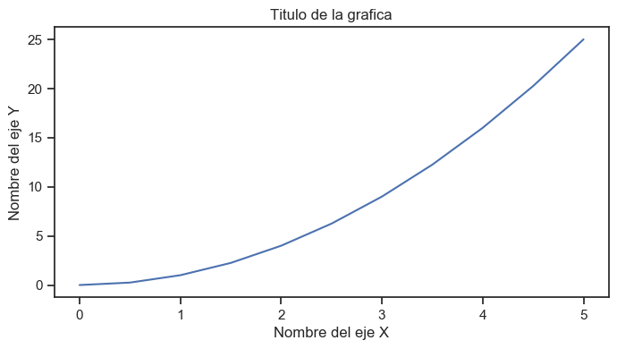
Parametros de las lineas: colores, ancho y tipos
Matplotlib le brinda muchas opciones para personalizar colores, anchos de línea y tipos de línea.
Existe la sintaxis básica que se puede consultar en:
https://matplotlib.org/2.1.1/api/_as_gen/matplotlib.pyplot.plot.html
Colores Basicos
Con matplotlib, podemos definir los colores de las líneas y otros elementos gráficos de varias maneras. En primer lugar, podemos usar la sintaxis similar a MATLAB donde 'b' significa azul,'g' significa verde, etc. También se admite la API MATLAB para seleccionar estilos de línea: donde, por ejemplo, ‘b.-‘significa una línea azul con puntos:
# Estilo MATLAB de estilo y color de linea
plt.plot(x, x**2, 'b.-') # linea azul con puntos
plt.plot(x, x**3, 'g--'); # Linea verde discontinua
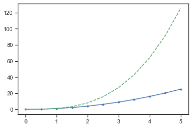
Colores usando el parametro color
También podemos definir colores por sus nombres o códigos hexadecimales RGB y, opcionalmente, proporcionar un valor alpha utilizando los argumentos de palabras clave color y alpha. Alpha indica opacidad.
plt.plot(x, x, color="red") # Medio transparente
plt.plot(x, x+1, color="red", alpha=0.5) # Medio transparente
plt.plot(x, x+2, color="#8B008B") # RGB hex code
plt.plot(x, x+3, color="#F08C08"); # RGB hex code
plt.grid(True) # poner grid en la grafica
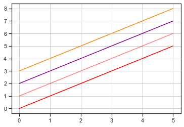
Estilos de Lineas y marcadores
Para cambiar el ancho de línea, podemos usar el argumento de la palabra clave linewidth o lw. El estilo de línea se puede seleccionar usando los argumentos de palabras clave linestyle o ls:
plt.subplots(figsize=(12,6))
plt.plot(x, x+1, color="red", linewidth=0.25)
plt.plot(x, x+2, color="red", linewidth=0.50)
plt.plot(x, x+3, color="red", linewidth=1.00)
plt.plot(x, x+4, color="red", linewidth=2.00)
# posibles opciones linestype ‘-‘, ‘–’, ‘-.’, ‘:’, ‘steps’
plt.plot(x, x+5, color="green", lw=3, linestyle='-')
plt.plot(x, x+6, color="green", lw=3, ls='-.')
plt.plot(x, x+7, color="green", lw=3, ls=':')
# lineas parametrizadas
line, = plt.plot(x, x+8, color="black", lw=1.50)
line.set_dashes([5, 10, 15, 10]) # formato: longitud de linea, longitud de espacio, ...
# posibles simbolos del marcas: marker = '+', 'o', '*', 's', ',', '.',bb '1', '2', '3', '4', ...
plt.plot(x, x+ 9, color="blue", lw=3, ls='-', marker='+')
plt.plot(x, x+10, color="blue", lw=3, ls='--', marker='o')
plt.plot(x, x+11, color="blue", lw=3, ls='-', marker='s')
plt.plot(x, x+12, color="blue", lw=3, ls='--', marker='1')
# tamaño y color de la marca
plt.plot(x, x+13, color="purple", lw=1, ls='-', marker='o', markersize=2)
plt.plot(x, x+14, color="purple", lw=1, ls='-', marker='o', markersize=4)
plt.plot(x, x+15, color="purple", lw=1, ls='-', marker='o', markersize=8, markerfacecolor="red")
plt.plot(x, x+16, color="purple", lw=1, ls='-', marker='s', markersize=8,
markerfacecolor="yellow", markeredgewidth=3, markeredgecolor="green");
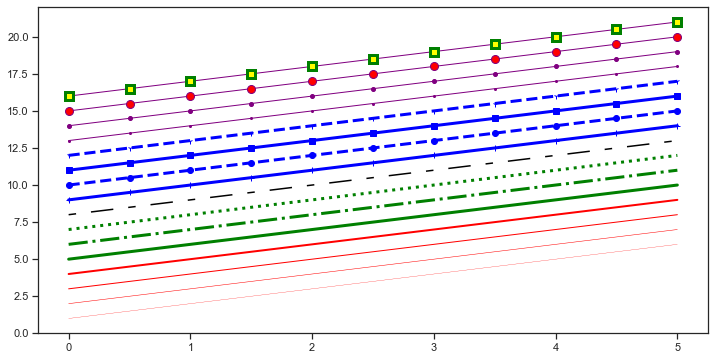
Para mas informacion: https://matplotlib.org/2.1.1/api/_as_gen/matplotlib.pyplot.plot.html
Subplots
# la funcion es plt.subplot(nrows, ncols, plot_number)
plt.subplot(1,2,1) # subplot fila=1 Col=2, grafica=1
plt.plot(x, y, 'r--') # r-- color rojo y linea discontinua
plt.subplot(1,2,2) # subplot fila=1 Col=2, grafica=2
plt.plot(y, x, 'g*-'); # para no mostrar info de la funcion
plt.tight_layout() # para que no se superpongan las graficas
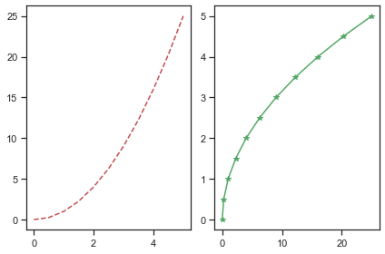
Multiples subplots
Crear subplot de diferentes tamaños se puede lograr con el metodo .subplot2grid()
Mas informacion en el link: https://matplotlib.org/api/_as_gen/matplotlib.pyplot.subplot2grid.html
plt.subplot2grid((3,3), (0,0), colspan=3)
plt.subplot2grid((3,3), (1,0), colspan=2)
plt.subplot2grid((3,3), (1,2), rowspan=2)
plt.subplot2grid((3,3), (2,0))
plt.subplot2grid((3,3), (2,1))
plt.tight_layout() # para que no se superpongan las graficas
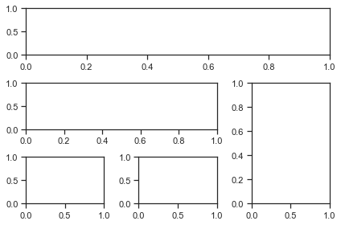
Rango del Plot
Podemos configurar los rangos de los ejes usando los métodos ylim y xlim en el objeto del eje, o axis('tight') para obtener automáticamente rangos de ejes “tightly fitted”:
plt.figure(figsize=(12, 4))
plt.subplot(1,3,1)
plt.plot(x, x**2, x, x**3)
plt.title("Rango por defecto de los ejes")
plt.subplot(1,3,2)
plt.plot(x, x**2, x, x**3)
plt.axis('tight')
plt.title("Ejes apretados")
plt.subplot(1,3,3)
plt.plot(x, x**2, x, x**3)
plt.ylim([0, 60])
plt.xlim([2, 5])
plt.title("ejes de rango personalizados");
plt.tight_layout() # para que no se superpongan las graficas
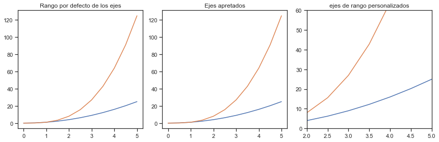
Escala Logaritmica
plt.figure(figsize=(10,4))
plt.subplot(1,2,1)
plt.plot(x, x**2, x, np.exp(x))
plt.title("escala Normal")
plt.subplot(1,2,2)
plt.plot(x, x**2, x, np.exp(x))
plt.yscale("log")
plt.title("Escala Logaritmica(y)");
plt.tight_layout() # para que no se superpongan las graficas
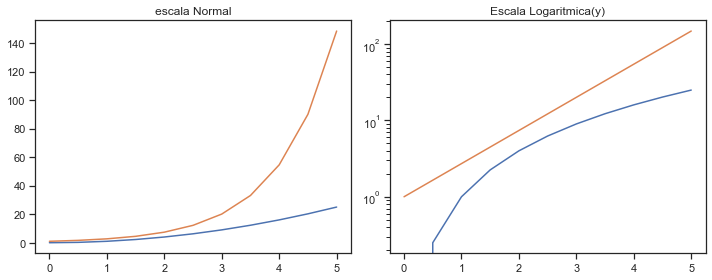
Anotaciones de texto
Anotar texto en figuras matplotlib se puede hacer usando la función text. Es compatible con el formato LaTeX al igual que los textos y títulos de la etiqueta del eje:
# Datos para graficar
xx = np.linspace(-0.75, 1., 100)
plt.plot(xx, xx**2, xx, xx**3)
plt.title("Plot con anotaciones")
# Anotacion 1
plt.text(0.15, 0.2, r"$y=x^2$", fontsize=20, color="blue")
#Anotacion 2
plt.text(0.65, 0.1, r"$y=x^3$", fontsize=20, color="green");
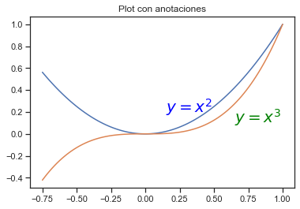
Matplotlib Método orientado a objetos
Lo demostrado hasta el momento es la forma basica de usar Matplotlib,
pero la libreria se puede usar mediante la programacion orientada a objtetos con el Matplotlib’s Object Oriented API. Esto significa que se creara una instancia del objeto de figura y luego llamaremos a métodos o atributos de ese objeto.
La idea principal al utilizar el método más formal orientado a objetos es crear objetos de figura y luego simplemente invocar métodos o atributos fuera de ese objeto. Este enfoque es más agradable cuando se trata de una figura que tiene múltiples graficos en él.
Mas informacion: https://matplotlib.org/api/api_overview.html#the-object-oriented-api
Un ejemplo de matplotlib orientado a objetos:
# Se crea una figura y 2 subplots
# cada subplt se accede por medio de los objetos axes
fig, axes = plt.subplots(nrows=1, ncols=2)
for ax in axes:
ax.plot(x, y, 'g')
ax.set_xlabel('x')
ax.set_ylabel('y')
ax.set_title('title')
plt.tight_layout() # para que no se superpongan las graficas
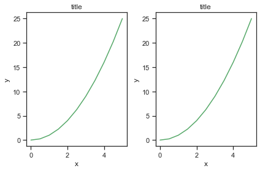
Tipos Especiales de Plots
Hay muchas Graficas especializadas que podemos crear, como barras, histogramas, diagramas de dispersión y mucho más. La mayoría de este tipo de tramas lo crearemos usando seaborn, una biblioteca de gráficos estadísticos para Python. Pero aquí hay algunos ejemplos de este tipo de graficos
Scatter Plot (Dispersion)
#Grafica X vs Y
# crear datos aleatorios
N = 50
x = np.random.rand(N)
y = np.random.rand(N)
plt.scatter(x, y)
plt.title("Scatter plot Simple");
plt.show() # En jupyter notebook no es necesario este comando
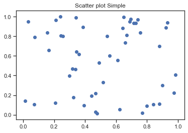
Con las graficas de scatter o dispersion se pueden representar mas de 2 variables en una misma grafica, en el siguiente ejemplo se realizara la comparacion de x vs y el color de los puntos se representara con otra variable y el tamaño de los puntos sera otra variable
# se creara otra variable que se representara con colores
colors = np.random.rand(N) # usar colores aleatorios
# se creara otra variable que se representara con el area de los puntos
area = np.pi * (15 * np.random.rand(N))**2 # 0 to 15 point radio
plt.scatter(x, y, s=area, c=colors, alpha=0.5) # el atributo alpha es para la transparencia
plt.title("Scatter plot de representacion de 4 variables");
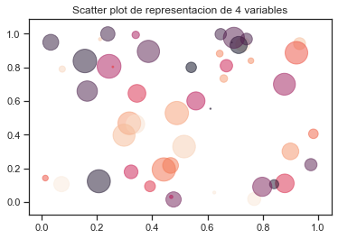
Histograma
Un histograma es una representación gráfica de una variable en forma de barras, donde la superficie de cada barra es proporcional a la frecuencia de los valores representados. Sirven para obtener una “primera vista” general, o panorama, de la distribución de la población, o de la muestra, respecto a una característica, cuantitativa y continua
# crear datos aleatorios
from random import sample
data = sample(range(1, 1000), 100)
plt.hist(data,bins = 10) # bins el numero de divisiones del histograma
plt.title("Histograma");
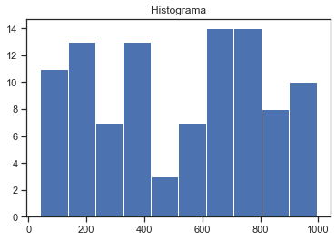
Boxplot
Informacion sobre el boxplot -> https://es.wikipedia.org/wiki/Diagrama_de_caja
- Primer cuartil (Q1) como la mediana de la primera mitad de valores
- Segundo cuartil (Q2) como la propia mediana de la serie
- Tercer cuartil (Q3) como la mediana de la segunda mitad de valores.
La diferencia entre el tercer cuartil y el primero se conoce como rango intercuartíl


#crear datos aleatorios
data = [np.random.normal(0, std, 100) for std in range(1, 4)]
# boxplot rectangular
plt.boxplot(data,vert=True,patch_artist=True);
plt.title("Boxplot");
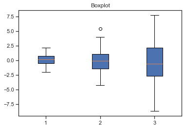
Diagramas de Violin
Permiten ver como es la distribucion de los datos
all_data = [np.random.normal(0, std, 100) for std in range(6, 10)]
# grafico de violin, se puede activar la visualizacion de la media y de la mediana
plt.violinplot(all_data, showmeans=False, showmedians=True)
plt.title('violin plot');
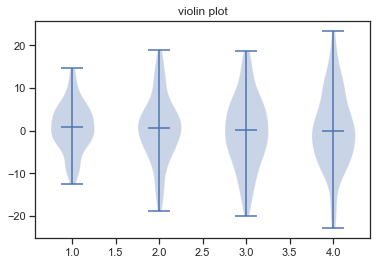
Diagramas de Violin vs Boxplot
Se grafiara usando programacino orientada a objetos con Matplolib la comparacion entre las graficas de violin y las de boxplot
fig, axes = plt.subplots(nrows=1, ncols=2, figsize=(12, 4))
# generar datos aleatorios
all_data = [np.random.normal(0, std, 100) for std in range(6, 10)]
# plot de violin
axes[0].violinplot(all_data,
showmeans=False,
showmedians=True)
axes[0].set_title('violin plot')
# plot box plot
axes[1].boxplot(all_data)
axes[1].set_title('box plot')
# agregando lineas horizontales
for ax in axes:
ax.yaxis.grid(True)
ax.set_xticks([y+1 for y in range(len(all_data))])
ax.set_xlabel('xlabel')
ax.set_ylabel('ylabel')
# agragando los nombres a las divisiones del eje x (x-tick labels)
plt.setp(axes, xticks=[y+1 for y in range(len(all_data))],
xticklabels=['x1', 'x2', 'x3', 'x4'])
fig.suptitle("Violin vs Boxplot",fontsize = 14) # titulo general de la grafica
plt.show()
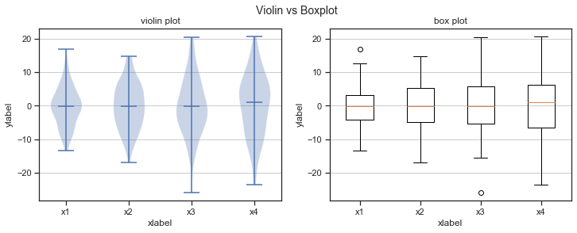
Diagramas de torta
No usarlos, los humanos no somos buenos discriminando angulos
labels = 'Caballos', 'Cerdos', 'Perros', 'Vacas'
sizes = [15, 30, 45, 10]
explode = (0, 0.1, 0, 0) # solo "Saque" el 2do pedazo (ejem. 'cerdos')
plt.pie(sizes, explode=explode, labels=labels, autopct='%1.1f%%',
shadow=True, startangle=90)
plt.axis('equal') #La relación de aspecto igual garantiza que el círculo sea homogeneo
plt.show()
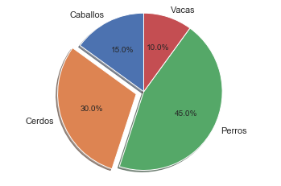
Diagramas de error
# generacion de datos aleatorios
x = np.arange(0.1, 4, 0.5)
y = np.exp(-x)
# Graficas de error
plt.errorbar(x, y, xerr=0.2, yerr=0.4)
plt.title("Diagrama de error")
plt.grid()
plt.show()
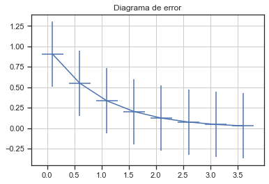
Guardando las figuras
Matplotlib puede generar resultados de alta calidad en varios formatos, incluidos PNG, JPG, EPS, SVG, PGF y PDF.
Para guardar una figura en un archivo, podemos usar el método savefig de la clase Figure:
Lo primero es antes de crear una grafica definir la clase Figure al principio de todo la grafica, Ejemplo:
fig = plt.figure(figsize=(10,4)) plt.scatter(x, y) plt.title("Scatter plot Simple");
fig.savefig("figura.png")
Aquí también podemos especificar opcionalmente el DPI y elegir entre diferentes formatos de salida (PNG, JPG, EPS, SVG, PGF y PDF):
fig.savefig("figura.pdf", dpi=200)
VISUALIZACION CON PANDAS
Pandas tiene funciones incorporadas para la visualización de datos. Está construido sobre matplotlib, pero se usa el formato de pandas para un uso más fácil. Mas informacion en: https://pandas.pydata.org/pandas-docs/stable/visualization.html
Los parametros de las graficas se pueden modificar con matplotlib.
Importar la libreria
import pandas as pd
import numpy as np
%matplotlib inline
Datos para graficar:
df1 = pd.read_csv('https://github.com/mwaskom/seaborn-data/raw/master/mpg.csv')
df1.head()
| mpg | cylinders | displacement | horsepower | weight | acceleration | model_year | origin | name | |
|---|---|---|---|---|---|---|---|---|---|
| 0 | 18.0 | 8 | 307.0 | 130.0 | 3504 | 12.0 | 70 | usa | chevrolet chevelle malibu |
| 1 | 15.0 | 8 | 350.0 | 165.0 | 3693 | 11.5 | 70 | usa | buick skylark 320 |
| 2 | 18.0 | 8 | 318.0 | 150.0 | 3436 | 11.0 | 70 | usa | plymouth satellite |
| 3 | 16.0 | 8 | 304.0 | 150.0 | 3433 | 12.0 | 70 | usa | amc rebel sst |
| 4 | 17.0 | 8 | 302.0 | 140.0 | 3449 | 10.5 | 70 | usa | ford torino |
df2 = pd.read_csv('https://github.com/mwaskom/seaborn-data/raw/master/iris.csv')
df2.head()
| sepal_length | sepal_width | petal_length | petal_width | species | |
|---|---|---|---|---|---|
| 0 | 5.1 | 3.5 | 1.4 | 0.2 | setosa |
| 1 | 4.9 | 3.0 | 1.4 | 0.2 | setosa |
| 2 | 4.7 | 3.2 | 1.3 | 0.2 | setosa |
| 3 | 4.6 | 3.1 | 1.5 | 0.2 | setosa |
| 4 | 5.0 | 3.6 | 1.4 | 0.2 | setosa |
Hojas de estilo(Style Sheets)
Matplotlib tien Hojas de estilo se pueden usar para hacer que las graficas se vean un poco mejor. Estas hojas de estilo incluyen plot_bmh, plot_fivethirtyeight, plot_ggplot y más. Básicamente, crean un conjunto de reglas de estilo que siguen las gráficas. Es Recomendable usarlos, pues hacen que todas las graficas tengan el mismo aspecto y se sientan más profesionales.
Antes de usasr plt.style.use() las graficas se ven así:
df1['acceleration'].hist();
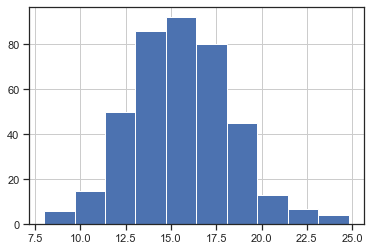
Usar el estilo ggplot
import matplotlib.pyplot as plt
plt.style.use('ggplot')
Ahora las graficas se ven asi:
df1['acceleration'].hist();
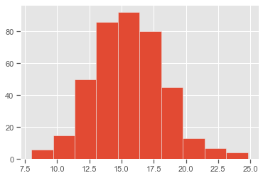
plt.style.use('bmh')
df1['acceleration'].hist();
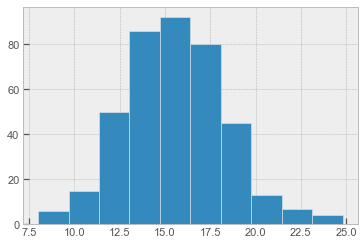
plt.style.use('dark_background')
df1['acceleration'].hist();
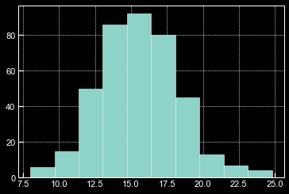
plt.style.use('fivethirtyeight')
df1['acceleration'].hist();
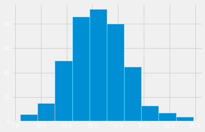
# El estilo por defecto es
plt.style.use('classic')
df1['acceleration'].hist();
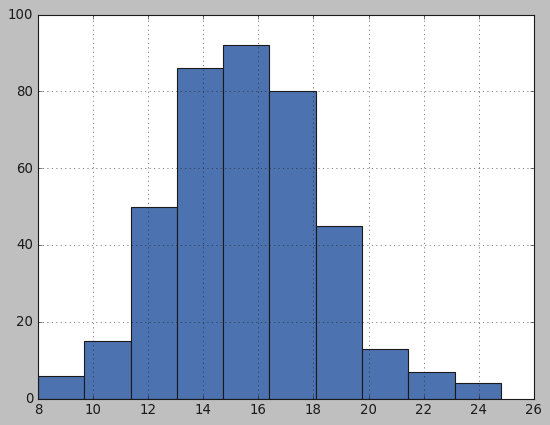
# Seguire usando el estilo ggplot para ver los tipos de grafica de pandas
plt.style.use('ggplot')
Tipos de graficas en Pandas
Hay varios tipos de plots integradas a pandas, la mayoría de estos plots sobn para estadística por naturaleza:
- df.plot.area
- df.plot.barh
- df.plot.density
- df.plot.hist
- df.plot.line
- df.plot.scatter
- df.plot.bar
- df.plot.box
- df.plot.hexbin
- df.plot.kde
- df.plot.pie
También se puede llamar a df.plot(kind = 'hist') o reemplazar ese argumento kind con cualquiera de los términos clave que se muestran en la lista anterior (por ejemplo, ‘box’, ‘barh’, etc.)
Area
# Se puede hacer de las siguiente manera
#df2.plot(kind='area',alpha = 0.4)
df2.plot.area(alpha=0.4);
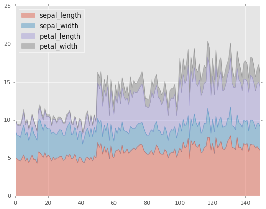
Barplots
# Visualizacion de datos
df2.head()
| sepal_length | sepal_width | petal_length | petal_width | species | |
|---|---|---|---|---|---|
| 0 | 5.1 | 3.5 | 1.4 | 0.2 | setosa |
| 1 | 4.9 | 3.0 | 1.4 | 0.2 | setosa |
| 2 | 4.7 | 3.2 | 1.3 | 0.2 | setosa |
| 3 | 4.6 | 3.1 | 1.5 | 0.2 | setosa |
| 4 | 5.0 | 3.6 | 1.4 | 0.2 | setosa |
# los nombres de cada columna equivalen a un color diferente
# Solo se graficaran algunos datos
df2.iloc[2:8].plot.bar();
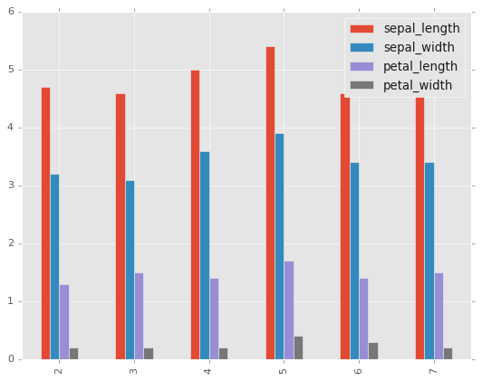
df2.iloc[2:8].plot.bar(stacked=True);
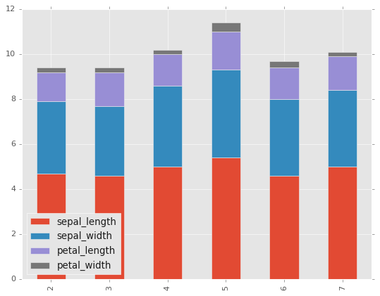
Histogramas
df1.head()
| mpg | cylinders | displacement | horsepower | weight | acceleration | model_year | origin | name | |
|---|---|---|---|---|---|---|---|---|---|
| 0 | 18.0 | 8 | 307.0 | 130.0 | 3504 | 12.0 | 70 | usa | chevrolet chevelle malibu |
| 1 | 15.0 | 8 | 350.0 | 165.0 | 3693 | 11.5 | 70 | usa | buick skylark 320 |
| 2 | 18.0 | 8 | 318.0 | 150.0 | 3436 | 11.0 | 70 | usa | plymouth satellite |
| 3 | 16.0 | 8 | 304.0 | 150.0 | 3433 | 12.0 | 70 | usa | amc rebel sst |
| 4 | 17.0 | 8 | 302.0 | 140.0 | 3449 | 10.5 | 70 | usa | ford torino |
df1['acceleration'].plot.hist(bins=50);
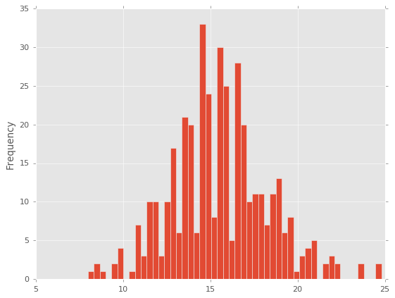
Lineas
# eje y = valores de la acceleracion
# eje x = valores del index
# atributo lw es el grosor de la linea
df1.plot.line(y='acceleration',figsize=(12,3),lw=1);
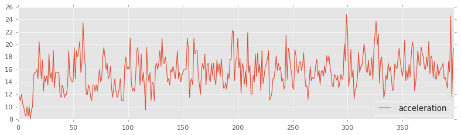
Scatter Plots
df1.plot.scatter(x='acceleration',y='mpg');
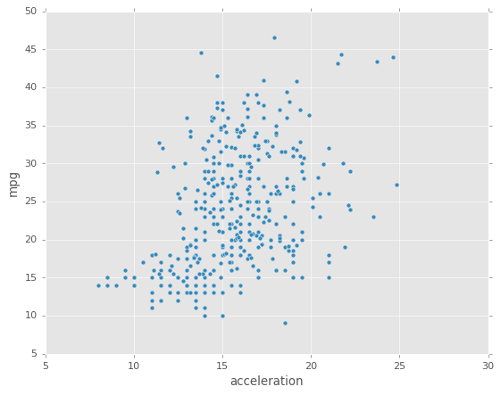
Se puede usar c para indicar el color de los valores de otra columna
Con cmap se indica el mapa de colores que se usaran.
Para ver los colormaps existente: http://matplotlib.org/users/colormaps.html
df1.plot.scatter(x='acceleration',y='mpg',c='model_year',cmap='coolwarm');
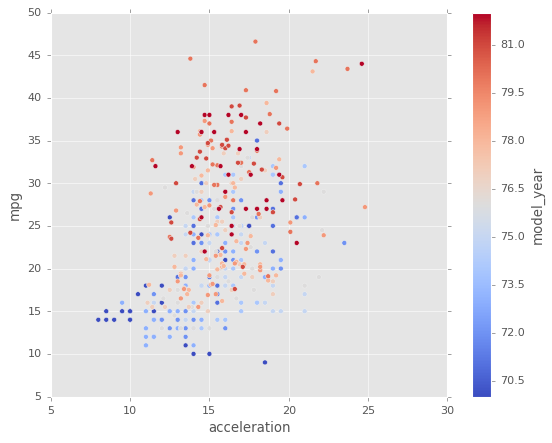
O se puede usar s para indicar el tamaño de los puntos. El parametro s debe ser un arreglo, no solo el nombre de una columna:
df1.plot.scatter(x='acceleration',y='mpg',s=df1['horsepower']*2);
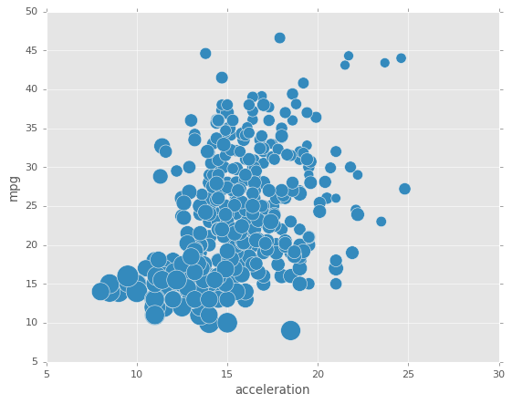
BoxPlots
df2.plot.box(); # Tambien se puede poner by= argumento para groupby
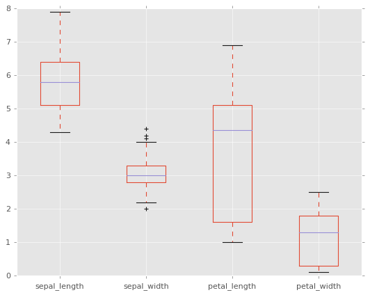
Diagrama de Torta
serie = pd.Series(3 * np.random.rand(4), index=['a', 'b', 'c', 'd'], name='series')
serie.plot.pie(figsize=(6, 6));
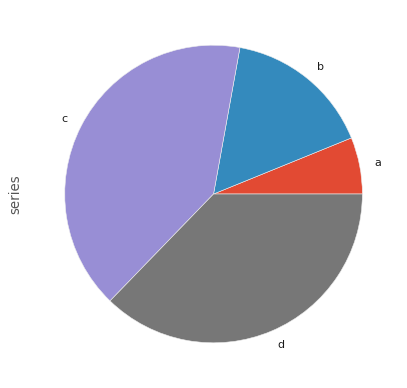
Hexagonal
Util para datos de 2 variables, alternativa al scatterplot:
df1.plot.hexbin(x='acceleration',y='mpg',gridsize=25,cmap='Oranges');
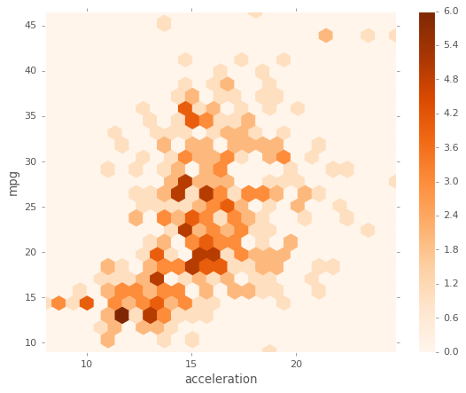
Kernel Density Estimation Plot(KDE)
df1['weight'].plot.kde();
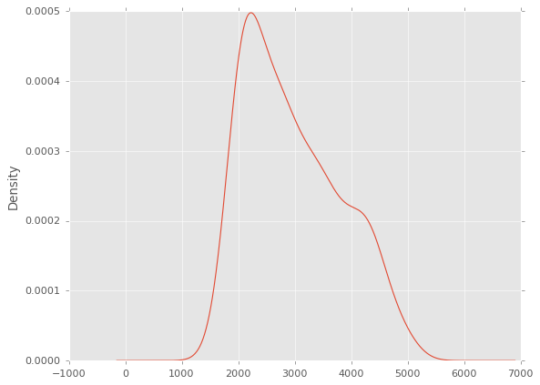
df2.plot.density();
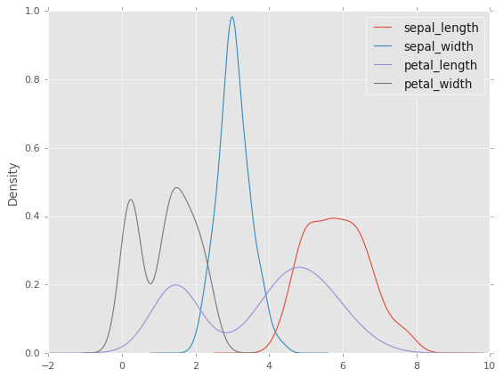
Scatter Matrix
pd.plotting.scatter_matrix(df2, figsize=(8, 8));
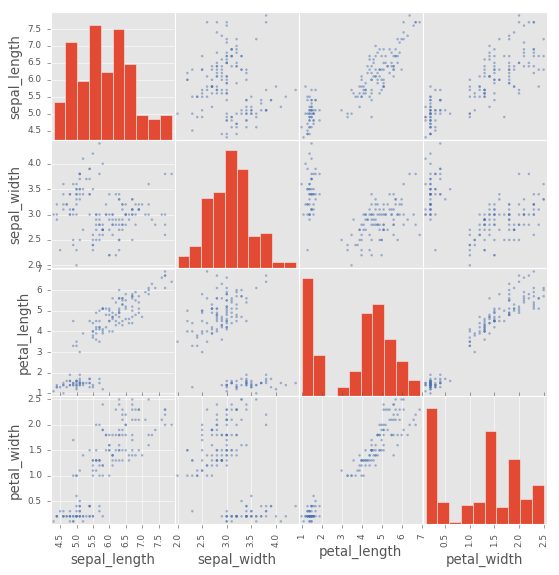
Parametros de las graficas
Graficar con Pandas es un método de hacer graficas mucho más fácil de usar que matplotlib, equilibra la facilidad de uso con control sobre la figura. Muchas de las llamadas a gráficos también aceptan argumentos adicionales de matplotlib plt.
df2.plot.density() # grafico de densidad con pandas
plt.title('Grafica de densidad de varias variables')
plt.grid(False)
plt.xticks([]);# Para eliminar los numeros del eje
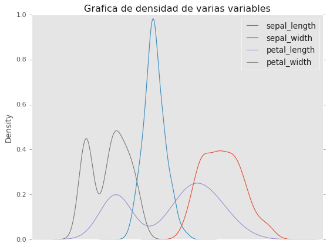
# La misma grafica pero adicionando los parametros en los argumentos
df2.plot.density(title='Grafica de densidad de varias variables',
grid=False,
xticks = []);

PLOTLY: Libreria de Visualizacion Interactiva
Plotly es una libreria de graficos interactivos de código abierto que admite más de 40 tipos de gráficos únicos que cubren una amplia gama de casos de uso estadísticos, financieros, geográficos, científicos y tridimensionales.
Ademas de ser interactivo y obtener los valores en cada punto de la gráfica, se pueden mezclar datos numéricos y categóricos.
Instalacion Plotly
´pip install plotly´
´conda install -c plotly plotly´
Importar Plotly express
Plotly express es un modulo para usar de forma rapida y concisa de usar la visualización interactiva de plotly
Nota: Los datos siempre deben estar en un dataframe
import plotly.express as px
Datos integrados en Plotly
Plotly viene con algunos data sets clasicos integrados para hacer pruebas:
- carshare
- election
- gapminder
- iris
- tips
- wind
Tambien se pueden encontar otros datasets clasicos de demostracion en formato .csv en: https://github.com/mwaskom/seaborn-data
tips = px.data.tips() # Importar el dataset tips
type(tips)
pandas.core.frame.DataFrame
print(px.data.tips.__doc__)
Each row represents a restaurant bill.
https://vincentarelbundock.github.io/Rdatasets/doc/reshape2/tips.html
Returns:
A `pandas.DataFrame` with 244 rows and the following columns: `['total_bill', 'tip', 'sex', 'smoker', 'day', 'time', 'size']`.
tips.head() # ver los primeros 5 registros
| total_bill | tip | sex | smoker | day | time | size | |
|---|---|---|---|---|---|---|---|
| 0 | 16.99 | 1.01 | Female | No | Sun | Dinner | 2 |
| 1 | 10.34 | 1.66 | Male | No | Sun | Dinner | 3 |
| 2 | 21.01 | 3.50 | Male | No | Sun | Dinner | 3 |
| 3 | 23.68 | 3.31 | Male | No | Sun | Dinner | 2 |
| 4 | 24.59 | 3.61 | Female | No | Sun | Dinner | 4 |
tips.dtypes #tipos de datos en el dataframe
total_bill float64
tip float64
sex object
smoker object
day object
time object
size int64
dtype: object
tips.describe() #Resumen estadistico de los datos del data frame por columna
| total_bill | tip | size | |
|---|---|---|---|
| count | 244.000000 | 244.000000 | 244.000000 |
| mean | 19.785943 | 2.998279 | 2.569672 |
| std | 8.902412 | 1.383638 | 0.951100 |
| min | 3.070000 | 1.000000 | 1.000000 |
| 25% | 13.347500 | 2.000000 | 2.000000 |
| 50% | 17.795000 | 2.900000 | 2.000000 |
| 75% | 24.127500 | 3.562500 | 3.000000 |
| max | 50.810000 | 10.000000 | 6.000000 |
Tipos de Graficas con Plotly
Lineas
px.line(tips,y='total_bill',title='Valor Total de la Cuenta')
Barras
px.bar(tips, x="sex", y="total_bill")
px.bar(tips, x="sex", y="total_bill", color='sex')
Histograma
px.histogram(tips,'total_bill',title='Histograma Valor Total de la Cuenta')
px.histogram(tips,'sex',title='Histograma de Generos')
px.histogram(tips,'day',
category_orders= {'day': ["Thur","Fri","Sat", "Sun"]},
title='Histograma de Dias')
Boxplot
px.box(tips,y='total_bill', title='Boxplot Valor Total de la Cuenta')
px.box(tips,x = 'day',y='total_bill', color='day',
title='Boxplots por dia del Valor Total de la Cuenta')
px.box(tips,x = 'day',y='total_bill', title= 'Boxplot por dia con dias en orden',
category_orders= {'day': ["Thur","Fri","Sat", "Sun"]})
px.box(tips,x = 'day',y='total_bill', color='smoker', category_orders= {'day': ["Thur","Fri","Sat", "Sun"]})
px.box(tips,x = 'day',y='total_bill', color='smoker',
boxmode='overlay',
title = 'Boxplots de cuenta total por dia, fumador o no , sobrepuestos ',
category_orders= {'day': ["Thur","Fri","Sat", "Sun"]})
Violin Plot
px.violin(tips,y='total_bill', title='Boxplot Valor Total de la Cuenta')
px.violin(tips,x = 'day',y='total_bill', title='Violin por dia del Valor Total de la Cuenta')
px.violin(tips,x = 'day',y='total_bill', color='day',
title='Violin por dia del Valor Total de la Cuenta')
px.violin(tips,x = 'day',y='total_bill', color='sex',
title='Violin por dia del Valor Total de la Cuenta')
px.violin(tips,x = 'day',y='total_bill', color='sex',violinmode='overlay',
title='Violin por dia del Valor Total de la Cuenta, Hombres y Mujeres')
StripPlot
px.strip(tips, x="day", y="total_bill")
px.strip(tips, x="total_bill", y="time",
orientation="h", color="smoker")
px.strip(tips, x="day", y="total_bill",
color="sex", stripmode='overlay')
Scatterplot
gapminder = px.data.gapminder()
gapminder2007 = gapminder.query("year==2007")
px.scatter(gapminder2007, x="gdpPercap", y="lifeExp")
px.scatter(gapminder2007, x="gdpPercap", y="lifeExp", color="continent")
px.scatter(gapminder2007, x="gdpPercap", y="lifeExp", size="pop", color="continent", size_max=60)
px.scatter(gapminder2007, x="gdpPercap", y="lifeExp", size="pop", color="continent",
hover_name="country", log_x=True, size_max=60)
Regresion Lineal
px.scatter(tips,x='total_bill',y='tip',trendline='ols')
Matrix Plot
px.scatter_matrix(tips)
px.scatter_matrix(tips, dimensions=['total_bill','tip','size'])
px.scatter_matrix(tips, dimensions=['total_bill','tip','size'], color='sex')
HeatMap
tips.head()
| total_bill | tip | sex | smoker | day | time | size | |
|---|---|---|---|---|---|---|---|
| 0 | 16.99 | 1.01 | Female | No | Sun | Dinner | 2 |
| 1 | 10.34 | 1.66 | Male | No | Sun | Dinner | 3 |
| 2 | 21.01 | 3.50 | Male | No | Sun | Dinner | 3 |
| 3 | 23.68 | 3.31 | Male | No | Sun | Dinner | 2 |
| 4 | 24.59 | 3.61 | Female | No | Sun | Dinner | 4 |
# Matriz de correlacion de los datos
tips.corr()
| total_bill | tip | size | |
|---|---|---|---|
| total_bill | 1.000000 | 0.675734 | 0.598315 |
| tip | 0.675734 | 1.000000 | 0.489299 |
| size | 0.598315 | 0.489299 | 1.000000 |
# Este grafico usa plotly de forma diferente
import plotly.figure_factory as ff
correlation = tips.corr().values # obtener los numeros de la correlacion
names = list(tips.corr().columns.values) # obtener los nombres de las columnas
transposed_corr = correlation[::-1] # es necesario transponer la matriz
ff.create_annotated_heatmap(transposed_corr, x = names,y = names[::-1], colorscale='Viridis')
Animaciones con Plotly
px.scatter(gapminder, x="gdpPercap", y="lifeExp",
animation_frame="year", animation_group="country",
size="pop", color="continent", hover_name="country",
log_x=True, size_max=45, range_x=[100,100000], range_y=[25,90])
Division de Columnas y filas por Categorias (Facet)
px.scatter(gapminder2007, x="gdpPercap", y="lifeExp", size="pop",
color="continent",
hover_name="country",
size_max=60, facet_col='continent',
log_x=True)
px.scatter(gapminder, x="gdpPercap", y="lifeExp",
animation_frame="year", animation_group="country",
size="pop", color="continent", hover_name="country",
facet_col="continent",
log_x=True, size_max=45, range_x=[100, 100000], range_y=[25, 90])
px.histogram(tips,'total_bill', facet_col="time", facet_row="smoker")
px.scatter(tips, x="total_bill", y="tip",
facet_row="smoker", facet_col="time", color="sex")
px.scatter(tips, x="total_bill", y="tip", facet_row="time", facet_col="day", color="smoker",
category_orders={"day": ["Thur", "Fri", "Sat", "Sun"], "time": ["Lunch", "Dinner"]})
Graficos en Margenes
px.scatter(tips,x='total_bill',y='tip',
marginal_x='histogram',
marginal_y='histogram')
px.scatter(tips,x='total_bill',y='tip',
marginal_x='violin',
marginal_y ='box')
px.scatter(tips,x='total_bill',y='tip',
marginal_x='violin',
marginal_y ='box',
color='sex')
SEABORN: Libreria de visualización de datos estadísticos de Python
Seaborn complementa a Matplotlib y se dirige específicamente a la visualización de datos estadísticos, funciona muy bien con pandas.
Instalacion Seaborn
Anaconda instala automaticamente Seaborn, en caso de no tenerlo instalarlo con el siguiente comando:
conda install seaborn o pip install seaborn.
Importar seaborn
Se importa de forma estandar de la siguiente manera:
import seaborn as sns
#para graficar dentro del jupyter notebook
%matplotlib inline
Datos integrados en seaborn
Seaborn viene con algunos data sets integrados, la lista competa se puede encontrar en: https://github.com/mwaskom/seaborn-data
tips = sns.load_dataset('tips') # Importar el dataset tips
type(tips)
pandas.core.frame.DataFrame
tips.head() # ver los primeros 5 registros
| total_bill | tip | sex | smoker | day | time | size | |
|---|---|---|---|---|---|---|---|
| 0 | 16.99 | 1.01 | Female | No | Sun | Dinner | 2 |
| 1 | 10.34 | 1.66 | Male | No | Sun | Dinner | 3 |
| 2 | 21.01 | 3.50 | Male | No | Sun | Dinner | 3 |
| 3 | 23.68 | 3.31 | Male | No | Sun | Dinner | 2 |
| 4 | 24.59 | 3.61 | Female | No | Sun | Dinner | 4 |
tips.dtypes #tipos de datos en el dataframe
total_bill float64
tip float64
sex category
smoker category
day category
time category
size int64
dtype: object
tips.describe() #Resumen estadistico de los datos del data frame por columna
| total_bill | tip | size | |
|---|---|---|---|
| count | 244.000000 | 244.000000 | 244.000000 |
| mean | 19.785943 | 2.998279 | 2.569672 |
| std | 8.902412 | 1.383638 | 0.951100 |
| min | 3.070000 | 1.000000 | 1.000000 |
| 25% | 13.347500 | 2.000000 | 2.000000 |
| 50% | 17.795000 | 2.900000 | 2.000000 |
| 75% | 24.127500 | 3.562500 | 3.000000 |
| max | 50.810000 | 10.000000 | 6.000000 |
Plots de Distribucion en Seaborn
distplot
El distplot muestra la distribución de un conjunto univariante de observaciones.
sns.distplot(tips['total_bill']);
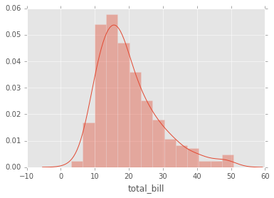
Si se quiere eliminar la grafica kde y solo tener el histograma entonces:
sns.distplot(tips['total_bill'],kde=False,bins=30);
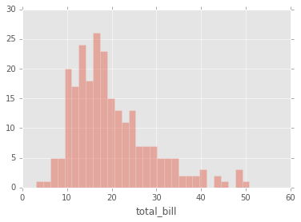
jointplot
jointplot() le permite básicamente emparejar dos distplots para datos bivariados. Con su elección de que parámetro kind va comparar:
- “scatter”
- “reg”
- “resid”
- “kde”
- “hex”
# Histogramas y scatter plot
sns.jointplot(x='total_bill',y='tip',data=tips,kind='scatter');
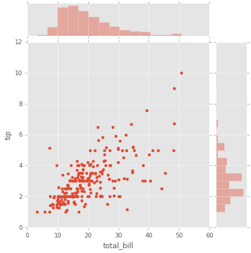
# Histogramas y hexagonal
sns.jointplot(x='total_bill',y='tip',data=tips,kind='hex');
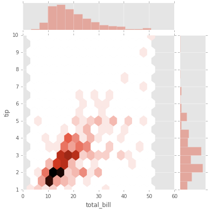
#Hystogramas con kde y scatter plot
sns.jointplot(x='total_bill',y='tip',data=tips,kind='reg');
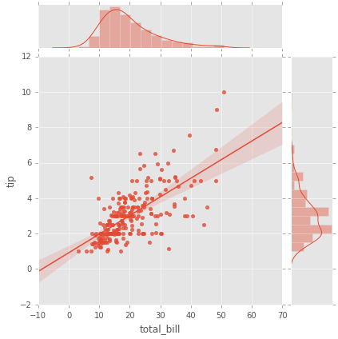
pairplot
pairplot grafica relaciones por pares en un dataframe completo (para las columnas numéricas) y soporta un argumento de tono de color(Hue) (para columnas categóricas).
#diagonal histogramas los demas son scatter plots
sns.pairplot(tips); # datos numericos
# Datos categoricos
# Diagonal KDE y los otros plots son scatter
sns.pairplot(tips,hue='sex',palette='coolwarm'); # cambio de colormap
kdeplot
kdeplots son Gráficos de Estimación de Densidad del Núcleo.
# Variable 'total bill'
sns.kdeplot(tips['total_bill']) #plot kde
<matplotlib.axes._subplots.AxesSubplot at 0x7f47c6f3c860>
#Variable 'tip'
sns.kdeplot(tips['tip'])
<matplotlib.axes._subplots.AxesSubplot at 0x7f47c6964908>
Plots para datos categoricos
- boxplot
- violinplot
- stripplot
- swarmplot
- barplot
- countplot
import seaborn as sns
%matplotlib inline
barplot
Es un gráfico general que le permite agregar los datos categóricos basados en alguna función, el valor predeterminado es la media:
sns.barplot(x='sex',y='total_bill',data=tips);
Puede cambiar el objeto estimador a su propia función, que convierte un vector a escalar:
import numpy as np
sns.barplot(x='sex',y='total_bill',data=tips,estimator=np.std); # la desviacion estandar como estimador
countplot
Esto es esencialmente lo mismo que Barplot, excepto que el estimador está contando explícitamente el número de ocurrencias. Por eso solo pasamos el valor de x:
sns.countplot(x='sex',data=tips);
boxplot
los boxplots (diagrama de caja) y violin plots se utilizan para mostrar la distribución de datos categóricos. Un diagrama de caja (boxplots o gráfico de caja y bigotes) muestra la distribución de datos cuantitativos de una manera que facilita las comparaciones entre variables o entre niveles de una variable categórica. El cuadro muestra los cuartiles del conjunto de datos, mientras que los bigotes se extienden para mostrar el resto de la distribución, a excepción de los puntos que se determinan como “valores atípicos” utilizando un método que es una función del rango intercuartílico.
sns.boxplot(x="day", y="total_bill", data=tips,palette='rainbow');
# se pueden graficar de forma horizontal
sns.boxplot(data=tips,palette='rainbow',orient='h');
# cambiar el color y ver varias variables (hue)
sns.boxplot(x="day", y="total_bill", hue="smoker",data=tips, palette="coolwarm");
violinplot
Un plot de violín juega un papel similar a un box and whisker plot (diagrama de cajas y bigotes). Muestra la distribución de datos cuantitativos a través de varios niveles de una (o más) variables categóricas de modo que esas distribuciones se puedan comparar. A diferencia de un diagrama de caja, en el que todos los componentes de la gráfica corresponden a los puntos de datos reales, la gráfica del violín presenta una estimación de la densidad del núcleo de la distribución subyacente.
sns.violinplot(x="day", y="total_bill", data=tips,palette='rainbow');
# Varias Variables
sns.violinplot(x="day", y="total_bill", data=tips,hue='sex',palette='Set1');
# Varias variables
sns.violinplot(x="day", y="total_bill", data=tips,hue='sex',split=True,palette='Set1');
stripplot
El stripplot dibujará un diagrama de dispersión donde una variable es categórica. Un stripplot se puede dibujar por sí mismo, pero también es un buen complemento de una casilla o trama de violín en los casos en que desea mostrar todas las observaciones junto con alguna representación de la distribución subyacente.
sns.stripplot(x="day", y="total_bill", data=tips);
sns.stripplot(x="day", y="total_bill", data=tips,jitter=True);
# Varias variables
sns.stripplot(x="day", y="total_bill", data=tips,jitter=True,hue='sex',palette='Set1');
# Varias Variables
sns.stripplot(x="day", y="total_bill", data=tips,jitter=True,hue='sex',palette='Set1',dodge=True);
swarmplot
El swarmplot es similar a stripplot(), pero los puntos se ajustan (solo a lo largo del eje categórico) para que no se superpongan. Esto proporciona una mejor representación de la distribución de los valores, aunque no se ajusta a un gran número de observaciones (tanto en términos de la capacidad de mostrar todos los puntos como en términos del cálculo necesario para organizarlos).
sns.swarmplot(x="day", y="total_bill", data=tips);
sns.swarmplot(x="day", y="total_bill",hue='sex',data=tips, palette="Set1", dodge=True);
Combininando Plots Categoricos
sns.violinplot(x="tip", y="day", data=tips,palette='rainbow')
sns.swarmplot(x="tip", y="day", data=tips,color='black',size=3);
Graficas de Matrices
Los Plot de matriz permiten graficar los datos como matrices codificadas por colores y también se pueden usar para indicar clústeres dentro de los datos, algunos de los mas usados son el heatmap y el clustermap de seaborn:
flights = sns.load_dataset('flights') # carga de datos
tips = sns.load_dataset('tips') # carga de datos
tips.head() # ver los primeros 5 elementos de la tabla
| total_bill | tip | sex | smoker | day | time | size | |
|---|---|---|---|---|---|---|---|
| 0 | 16.99 | 1.01 | Female | No | Sun | Dinner | 2 |
| 1 | 10.34 | 1.66 | Male | No | Sun | Dinner | 3 |
| 2 | 21.01 | 3.50 | Male | No | Sun | Dinner | 3 |
| 3 | 23.68 | 3.31 | Male | No | Sun | Dinner | 2 |
| 4 | 24.59 | 3.61 | Female | No | Sun | Dinner | 4 |
flights.head() # ver los primeros 5 elementos de la tabla
| year | month | passengers | |
|---|---|---|---|
| 0 | 1949 | January | 112 |
| 1 | 1949 | February | 118 |
| 2 | 1949 | March | 132 |
| 3 | 1949 | April | 129 |
| 4 | 1949 | May | 121 |
Heatmap
Para que un mapa de calor funcione correctamente, los datos ya deben estar en forma de matriz, la función de sns.heatmap básicamente los colorea. Por ejemplo:
tips.head()
| total_bill | tip | sex | smoker | day | time | size | |
|---|---|---|---|---|---|---|---|
| 0 | 16.99 | 1.01 | Female | No | Sun | Dinner | 2 |
| 1 | 10.34 | 1.66 | Male | No | Sun | Dinner | 3 |
| 2 | 21.01 | 3.50 | Male | No | Sun | Dinner | 3 |
| 3 | 23.68 | 3.31 | Male | No | Sun | Dinner | 2 |
| 4 | 24.59 | 3.61 | Female | No | Sun | Dinner | 4 |
# Matriz de correlacion de los datos
tips.corr()
| total_bill | tip | size | |
|---|---|---|---|
| total_bill | 1.000000 | 0.675734 | 0.598315 |
| tip | 0.675734 | 1.000000 | 0.489299 |
| size | 0.598315 | 0.489299 | 1.000000 |
# Heatmap de la matriz de correlacion
sns.heatmap(tips.corr());
# Cambiando el mapa de colres y agregando las anotaciones a la grafica
sns.heatmap(tips.corr(),cmap='coolwarm',annot=True);
O para los datos de vuelos:
# Definir una pivot table
flights.pivot_table(values='passengers',index='month',columns='year')
| year | 1949 | 1950 | 1951 | 1952 | 1953 | 1954 | 1955 | 1956 | 1957 | 1958 | 1959 | 1960 |
|---|---|---|---|---|---|---|---|---|---|---|---|---|
| month | ||||||||||||
| January | 112 | 115 | 145 | 171 | 196 | 204 | 242 | 284 | 315 | 340 | 360 | 417 |
| February | 118 | 126 | 150 | 180 | 196 | 188 | 233 | 277 | 301 | 318 | 342 | 391 |
| March | 132 | 141 | 178 | 193 | 236 | 235 | 267 | 317 | 356 | 362 | 406 | 419 |
| April | 129 | 135 | 163 | 181 | 235 | 227 | 269 | 313 | 348 | 348 | 396 | 461 |
| May | 121 | 125 | 172 | 183 | 229 | 234 | 270 | 318 | 355 | 363 | 420 | 472 |
| June | 135 | 149 | 178 | 218 | 243 | 264 | 315 | 374 | 422 | 435 | 472 | 535 |
| July | 148 | 170 | 199 | 230 | 264 | 302 | 364 | 413 | 465 | 491 | 548 | 622 |
| August | 148 | 170 | 199 | 242 | 272 | 293 | 347 | 405 | 467 | 505 | 559 | 606 |
| September | 136 | 158 | 184 | 209 | 237 | 259 | 312 | 355 | 404 | 404 | 463 | 508 |
| October | 119 | 133 | 162 | 191 | 211 | 229 | 274 | 306 | 347 | 359 | 407 | 461 |
| November | 104 | 114 | 146 | 172 | 180 | 203 | 237 | 271 | 305 | 310 | 362 | 390 |
| December | 118 | 140 | 166 | 194 | 201 | 229 | 278 | 306 | 336 | 337 | 405 | 432 |
# Graficar la pivot table como un heatmap
pvflights = flights.pivot_table(values='passengers',index='month',columns='year')
sns.heatmap(pvflights);
# Cambiando los parametros del colormap y el ancho y color de las lineas d division
sns.heatmap(pvflights,cmap='magma',linecolor='white',linewidths=1);
clustermap
El mapa de clúster utiliza la agrupación jerárquica para producir una versión agrupada del mapa de calor. Por ejemplo:
# Grafica Clustermap de la tabla pivot de los vuelos
sns.clustermap(pvflights);
Observe ahora cómo los años y meses ya no están en orden, en su lugar se agrupan por similitud en el valor (recuento de pasajeros). Eso significa que podemos comenzar a inferir cosas de esta trama, como agosto y julio siendo similares (tiene sentido, ya que ambos son meses de viaje de verano)
# Más opciones para obtener la información un poco más clara como la normalización
# Cambiar el colormap
sns.clustermap(pvflights,cmap='coolwarm',standard_scale=1);
Grids
Las grids son tipos generales de plots que le permiten mapear tipos de plots en filas y columnas de una cuadrícula, esto le ayuda a crear plots similares separadas por características.
# Importar librerias
import seaborn as sns
import matplotlib.pyplot as plt
%matplotlib inline
iris = sns.load_dataset('iris') #Importar el dataset
iris.head() #Ver los primeros 5 elementos de la tabla
| sepal_length | sepal_width | petal_length | petal_width | species | |
|---|---|---|---|---|---|
| 0 | 5.1 | 3.5 | 1.4 | 0.2 | setosa |
| 1 | 4.9 | 3.0 | 1.4 | 0.2 | setosa |
| 2 | 4.7 | 3.2 | 1.3 | 0.2 | setosa |
| 3 | 4.6 | 3.1 | 1.5 | 0.2 | setosa |
| 4 | 5.0 | 3.6 | 1.4 | 0.2 | setosa |
PairGrid
Pairgrid es un subplot grid para graficar relaciones por pares en un conjunto de datos.
# solo el Grid
sns.PairGrid(iris);
# Ahora se mapea el grid
g = sns.PairGrid(iris)
g.map(plt.scatter);
# Mapear a arriba, abajo y diagonal
g = sns.PairGrid(iris) # crear una cuadricula
g.map_diag(plt.hist) #Histogramas en la diagonal
g.map_upper(plt.scatter) # Scatter plots en la parte superior
g.map_lower(sns.kdeplot); # Plots de densidad kde en la parte inferior
pairplot
pairplot es una versión más simple de PairGrid (se usa con bastante frecuencia)
# La diagonal es un histograma
# las otras graficas son scatter plots
sns.pairplot(iris);
# la diagonal son kde de los datos categoricos
# las otars graficas son scatter plots
sns.pairplot(iris,hue='species',palette='rainbow');
Facet Grid
FacetGrid es la forma general de crear grids de plots basados en dos caracteristica:
tips = sns.load_dataset('tips')
tips.head()
| total_bill | tip | sex | smoker | day | time | size | |
|---|---|---|---|---|---|---|---|
| 0 | 16.99 | 1.01 | Female | No | Sun | Dinner | 2 |
| 1 | 10.34 | 1.66 | Male | No | Sun | Dinner | 3 |
| 2 | 21.01 | 3.50 | Male | No | Sun | Dinner | 3 |
| 3 | 23.68 | 3.31 | Male | No | Sun | Dinner | 2 |
| 4 | 24.59 | 3.61 | Female | No | Sun | Dinner | 4 |
# Solo el Grid
g = sns.FacetGrid(tips, col="time", row="smoker");
# histogramas entre las dos variables
g = sns.FacetGrid(tips, col="time", row="smoker")
g = g.map(plt.hist, "total_bill")
# Scatterplots
g = sns.FacetGrid(tips, col="time", row="smoker",hue='sex')
# Observe como los argumentos vienen despues de llamar a plt.scatter
g = g.map(plt.scatter, "total_bill", "tip").add_legend()
JointGrid
JointGrid es la version general de jointplot()
# Solo el grid
g = sns.JointGrid(x="total_bill", y="tip", data=tips)
# Grafica de regresion y histograma con kde
g = sns.JointGrid(x="total_bill", y="tip", data=tips)
g = g.plot(sns.regplot, sns.distplot)
Plots de Regresion
Seaborn tiene muchas capacidades integradas para trazados de regresión, lmplot le permite visualizar modelos lineales, pero también le permite dividir los gráficos en función de las características, así como también colorear el tono (hue) en función de las características.
#Importar librerias
import seaborn as sns
%matplotlib inline
tips = sns.load_dataset('tips') # importar el dataset
tips.head() # ver los primeros datos del dataset
| total_bill | tip | sex | smoker | day | time | size | |
|---|---|---|---|---|---|---|---|
| 0 | 16.99 | 1.01 | Female | No | Sun | Dinner | 2 |
| 1 | 10.34 | 1.66 | Male | No | Sun | Dinner | 3 |
| 2 | 21.01 | 3.50 | Male | No | Sun | Dinner | 3 |
| 3 | 23.68 | 3.31 | Male | No | Sun | Dinner | 2 |
| 4 | 24.59 | 3.61 | Female | No | Sun | Dinner | 4 |
lmplot()
#scatter plot mas la regresion lineal
sns.lmplot(x='total_bill',y='tip',data=tips);
#scatter plot mas la regresion lineal basado en el genero
sns.lmplot(x='total_bill',y='tip',data=tips,hue='sex');
# Cambio de paleta de colores
sns.lmplot(x='total_bill',y='tip',data=tips,hue='sex',palette='coolwarm');

Usando Marcadores
Los argumentos kwargs lmplot pasan a regplto que es una forma más general de lmplot(). regplot tiene un parámetro scatter_kws que se pasa a plt.scatter y puede modificar los parametros.
Mire siempre la documentacion http://matplotlib.org/api/markers_api.html
# http://matplotlib.org/api/markers_api.html
sns.lmplot(x='total_bill',y='tip',data=tips,hue='sex',palette='coolwarm',
markers=['o','v'],scatter_kws={'s':100});
Usando un Grid
Podemos agregar una separación más variable a través de columnas y filas con el uso de un grid. Simplemente indícandolo en los argumentos col o row:
sns.lmplot(x='total_bill',y='tip',data=tips,col='sex'); #hace una division por el genero
# division por el genero y por tiempo de almuerzo o cena
sns.lmplot(x="total_bill", y="tip", row="sex", col="time",data=tips);
# informacion del genero en HUE
sns.lmplot(x='total_bill',y='tip',data=tips,col='day',hue='sex',palette='coolwarm');
Aspecto y Tamaño
Las figuras de Seaborn se les puede ajustar su tamaño y relación de aspecto con los parámetros height y aspect:
sns.lmplot(x='total_bill',y='tip',data=tips,col='day',hue='sex',palette='coolwarm',
aspect=0.6,height=8);
Referencias
- http://www.matplotlib.org
- http://matplotlib.org/gallery.html - Una gran galería que muestra varios tipos de graficos matplotlib. ¡Muy recomendable!
- Matplotlib cheat sheet
- http://www.loria.fr/~rougier/teaching/matplotlib - Un Buen tutorial de matplotlib.
- http://scipy-lectures.github.io/matplotlib/matplotlib.html - Otra buena referencia para matplotlib reference.
- https://medium.com/plotly/introducing-plotly-express-808df010143d
- https://plot.ly/python/plotly-express/
- http://seaborn.pydata.org/ - Documentacion Seaborn otra libreria de graficas estadisticas
- http://matplotlib.org/api/markers_api.html - documentacion de marcadores
- Lista de colormaps http://www.scipy.org/Cookbook/Matplotlib/Show_colormaps
Phd. Jose R. Zapata